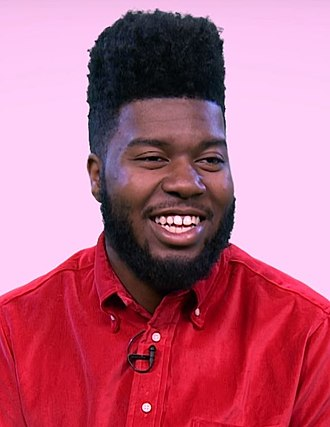

Music is a way where we can express
ourselves and our feelings. It’s something that we can go to whenever I need it. Every time I hear
these songs, it makes me remember a lot of good and bad times that I once been through. My kind of genre are more on the Hip-hop and Rap songs.
Russ
Russell James Vitale (born September 26, 1992),
better known by his stage name Russ, is an American rapper, singer, songwriter, record producer and author from Atlanta, Georgia.
He is best known for his singles "What They Want", "Losin Control" and "Best on Earth",
which peaked respectively at number 83, 63 and 46 on the US Billboard Hot 100. I love his songs
because I can relate to the lyrics of it.
Nobody Knows
Missin' you crazy
Khalid

Khalid Donnel Robinson (born February 11, 1998)is an American singer and songwriter.
He is signed to Right Hand Music Group and RCA Records. In March 2017, Khalid released his debut studio
album, American Teen, the album spawned the US top-20 singles, "Location" and “Young Dumb & Broke”,
and was later certified double platinum by the Recording Industry Association of America (RIAA).